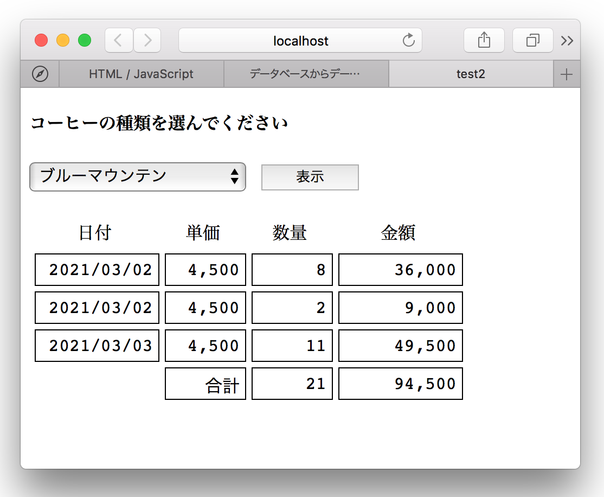

データベースからデータを取得しブラウザに表示する
JavaScript と PHPで分担する
データベースからデータを取得しブラウザに表示するという基本的な処理をJavaScriptとPHPで分担して実装する。

画像をクリクすると実際に動作するページが表示されます
処理の流れ
基本的な処理の制御は JavaScript側で行い、データベースの照会部分だけ PHPで行うようにしている。PHPとのインタフェースは、JavaScriptの XMLHttpRequesクラスを利用しデータの受け渡しを行う。レスポンスデータはJSON形式で返す。JavaScriptは、取得したデータを元に動的にHTMLタグを作成することにより一覧表を表示する。
動的に変化するデータによってページの一部の表示内容を変えるなど、インタラクティブな処理を実現するには、JavaScriptで実装するのが一般的。PHPの場合は、ページの更新はベージ全体の書き換えになるのでそのような処理は困難である。
![[query_method2_2]](/lib/HTMLofImage.html?filename=/html/10/query_method2_2.png&title=query_method2_2&width=750)
ソースコード
クライアント HTML
test02.html
クライアント JavaScript
test02.js
サーバPHP
test02.php
CSS
test01.css